GAN_P4 Learning from Unpaired Data¶
有关GAN的最后一段，是一个GAN的神奇应用，它把GAN用在==unsupervised Learning==上，到目前为止我们讲的几乎都是==Supervised Learning==
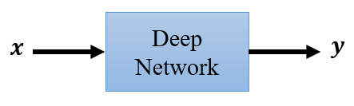
我们要训练一个Network，Network的输入叫做X输出叫做Y，我们需要成对的资料，才有办法训练这样子的Network，
但是你可能会遇到一个状况是，我们有一堆X我们有一堆Y，但X跟Y是不成对的，在这种状况下，我们有没有办法拿这样的资料，来训练Network呢，像这一种没有成对的资料，我们就叫做==unlabeled==的资料
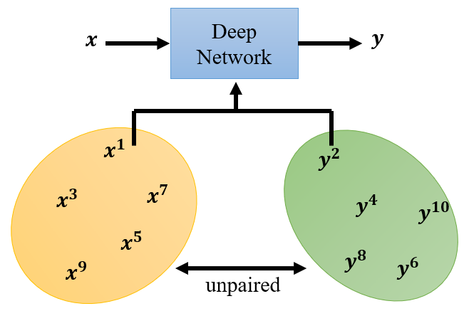
其实在作业三跟作业五里面，都提供给你两个例子，我们就把这个怎么用，没有标注的资料，怎么做==Semi-supervised Learning==，这件事情放在作业里面，如果你有兴致的话就可以来，体验一下semi-supervised Learning，到底可以带多大的帮助
但是不管是作业三的pseudo labeling，还是作业五的back translation，这些方法或多或少，都还是需要一些成对的资料
在作业三里面，你得先训练出一个模型，这个模型可以帮你提供pseudo label，如果你一开始，根本就没有太多有标注的资料，你的模型很差，你根本就没有办法产生，比较好的pseudo label，或是back translation，你也得有一个back translation 的model，你才办法做back translation，所以不管是作业三，还是作业五的方法，还是都需要一些成对的资料
但是假设我们遇到，一个更艰巨的状况，是我们一点成对的资料都没有，那要什么怎么办呢？
我们这边举一个例子，影像风格转换，假设今天我要训练，一个Deep Network，它要做的事情是把X domain的图，X domain的图，我们假设是真人的照片，Y domain的图是二次元人物的头像

在这个例子里面我们可能，就没有任何的成对的资料，在这种状况下，还有没有办法训练一个Network，输入一个X产生一个Y呢，这个就是GAN可以帮我们做的事情
那接下来我们就是看看怎么用GAN，在这种完全没有成对资料的情况下进行学习
这个是我们之前在讲，unconditional的generation的时候，你看到的generator的架构
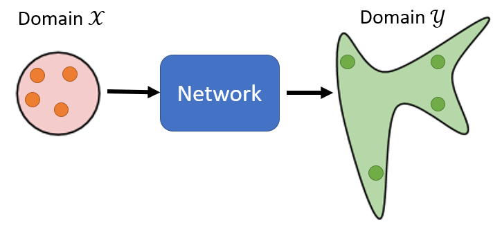
输入是一个Gaussian的分布，输出可能是一个复杂的分布
现在我们在稍微，转换一下我们的想法，输入我们不说它是Gaussian的分布，我们说它是X domain的图片的分布，那输出我们说，是Y domain图片的分布

乍听之下好像没有很难，你完全可以套用原来的GAN的想法，在原来的GAN里面我们说，我们从Gaussian sample一个向量，丢到Generator里面
那我们一开始也说，其实不一定只要Gaussian sample这一个distribution，只要是有办法被sample的就行了，我们选Gaussian只是因为Gaussian的formulation我们知道
那我们现在如果，输入是X domain的distribution，我们只要改成可以从X domain sample就结束了，那你有没有办法从X domain sample呢
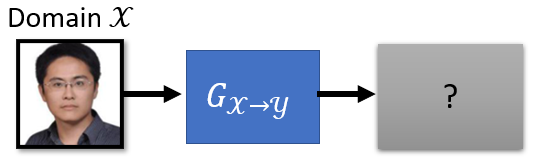
可以 你就从人脸的照片里面，真实的人脸里面随便挑一张出来，这是一个死臭酸宅(老师本人)然后就结束了，你就可以从X domain sample照片出来，你把这个照片丢到generator里面，让它产生另外一张图片，产生另外一个distribution里面的图片
那怎么让它变成，是Y domain的distribution呢？
那就要两三个discriminator，那这个discriminator给它看过很多Y domain的图，所以它能够分辨Y domain的图，跟不是Y domain的图的差异

看到Y domain的图就给它高分，看到不是Y domain的图，不是二次元人物就给它低分，那就这样结束了
但是光是套用原来的GAN训练generator跟discriminator好像是不够的，因为我们现在的discriminator，它要做的事情是要让这个generator，输出一张Y domain的图
那generator它可能真的，可以学到输出Y domain的图，但是它输出的Y domain的图，一定要跟输入有关系吗，你没有任何的限制要求你的generator做这件事
你的generator也许就把这张图片，当作一个Gaussian的noise，然后反正它就是看到，不管你输入什么它都无视它，反正它就输出一个，像是二次元人物的图片，discriminator觉得它做得很好，其实就结束了

所以如果我们完全只套用，这个一般的GAN的做法，只训练一个generator，这个generator input的distribution，从Gaussian变成X domain的image，然后训练一个discriminator，显然是不够的，因为你训练出来的generator，它可以产生二次元人物的头像，但是跟输入的真实的照片，没有什么特别的关系，那这个不是我们要的，
我们在conditional GAN的时候，是不是也看过一模一样的问题呢，在讲conditional GAN的时候，我有特别提到说，假设你的discriminator只看Y，那它可能会无视generator的输入，那产生出来的结果不是我们要的，但是这边啊，如果我们要从unpaired的data学习，我们也没有办法，直接套用conditional GAN的想法，因为在刚才讲的，conditional GAN里面，我们是有成对的资料，来训练的discriminator
Cycle GAN¶
这边这个想法叫做==Cycle GAN==，在Cycle GAN里面，我们会train两个generator
- 第一个generator它的工作是，把X domain的图变成Y domain的图
- 第二个generator它的工作是，看到一张Y domain的图，把它还原回X domain的图

在训练的时候，我们今天增加了一个额外的目标，就是我们希望输入一张图片，从X domain转成Y domain以后，要从Y domain转回原来，一模一样的X domain的图，经过两次转换以后，输入跟输出要越接近越好
你说怎么让两张图片越接近越好呢？
两张图片就是两个向量，这两个向量之间的距离，你就是让这两个向量，它们之间的距离越接近越好，就是要两张图片越像越好
因为这边有一个循环，从X到Y再从Y回到X，它是一个cycle，所以叫做Cycle GAN，这个要让输入经过两次转换以后，变成输出，输入跟输出越接近越好，这个叫做==Cycle的consistency==
所以现在这边我们有三个Network
- 第一个generator，它的工作是把X转成Y
- 第二个generator，它的工作是要把Y还原回原来的X
- 那这个discriminator，它的工作仍然是要看，蓝色的这个generator它的输出，像不像是Y domain的图
那加入了这个橙色的从Y到X的generator以后，对于前面这个蓝色的generator来说，它就再也不能够随便乱做了，它就不能够随便产生乱七八糟，跟输入没有关系的人脸了
这边假设输入一个死臭酸宅，这边假设输出的是辉夜

另外一个这个不知道这是谁的，然后对第二个generator来说，它就是视这张辉夜作为输入，它根本无法想象说要把辉夜还原回死臭酸宅，它根本不知道说，原来输入的图片长什么样子
所以对第一个generator来说，为了要让第二个generator能够成功地还原原来的图片，它产生出来的图片就不能跟输入差太多，所以这边是一个死臭酸宅，这边输出至少也得是一个戴眼镜的男生的角色才行

所以这边是一个戴眼镜男生的角色，然后第二个generator才能够，把这个角色还原回原来的输入，所以如果你加Cycle GAN，你至少可以强迫你的generator，它输出的Y domain的图片至少跟输入的X domain的图片有一些关系
这时你可能会有的一个问题就是，你这边只保证有一些关系啊，你怎么知道这个关系是我们要的呢？
- 机器有没有可能学到很奇怪的转换，输入一个戴眼镜的人，然后这个generator学到的是，看到眼镜就把眼镜抹掉，然后把它变成一颗痣，然后第二个generator橙色的学到的，就是看到痣就还原回眼镜，这样还是可以满足cycle consistency，还是可以把输入的图片，变成输出的图片
- 一个更极端的例子，假设第一个generator学到的就是，把图片反转 左右翻转，第二个generator它也只要学到，把图片左右翻转，你就可以还原了啊
所以今天如果我们做Cycle GAN，用cycle consistency，似乎没有办法保证，我们输入跟输出的人脸，看起来真的很像，因为也许机器会学到很奇怪的转换，反正只要第二个generator，可以转得回来就好了
确实有可能有这样的问题发生，而且目前没有什么特别好的解法
但我可以告诉你说，实际上你要使用Cycle GAN的时候，这样子的状况没有那么容易出现，如果你实际上使用Cycle GAN，你会发现输入跟输出往往，真的就会看起来非常像，而且甚至在实作上，在实作的经验上，你就算没有第二个generator，你不用cycle GAN，拿一般的GAN来做，这种图片风格转换的任务，你往往也做得起来
因为在实作上你会发现，Network其实非常懒惰，它输入一个图片，它往往就想输出，by default就是想输出很像的东西，它不太想把输入的图片，做太复杂的转换，像是什么眼镜变成一颗痣这种状况，它不爱这么麻烦的东西，有眼镜就输出眼镜，可能对它来说是比较容易的抉择，所以在真的实作上，这个问题没有很大，输入跟输出会是像，但是理论上好像没有什么保证说，输入跟输出的图片一定要很像，就算你加了cycle consistency
所以这个是实作与理论上，你可能会遇到的差异，总之虽然Cycle GAN没有保证说，输入跟输出一定很像，但实际上你会发现输入跟输出，往往非常像，你只是改变了风格而已
那这个Cycle GAN可以是双向的，我们刚才有一个generator，输入Y domain的图片，输出X domain的图片，我们是先把X domain的图片转成Y，在把Y转回X
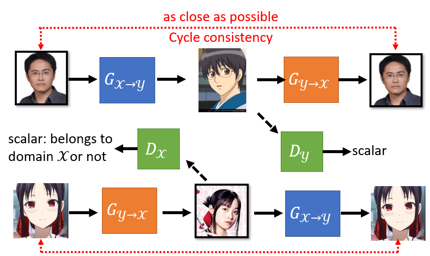
在训练cycle GAN的时候，你可以同时做另外一个方向的训练，也就是
- 把这个橙色的generator拿来，给它Y domain的图片，让它产生X domain的图片
- 然后在把蓝色的generator拿来，把X domain的图片，还原回原来Y domain的图片
那你依然要让，输入跟输出越接近越好，那你一样要训练一个discriminator，这个discriminator是，X domain的discriminator，它是要看一张图片，像不像是真实人脸的discriminator，这个discriminator要去看说，这一个橙色的generator的输出，像不像是真实的人脸，这个橙色的generator它要去骗过，这个Dx这个绿色的左边，这一个discriminator，这个合起来就是Cycle GAN
那除了Cycle GAN以外，你可能也听过很多其他的，可以做风格转换的GAN
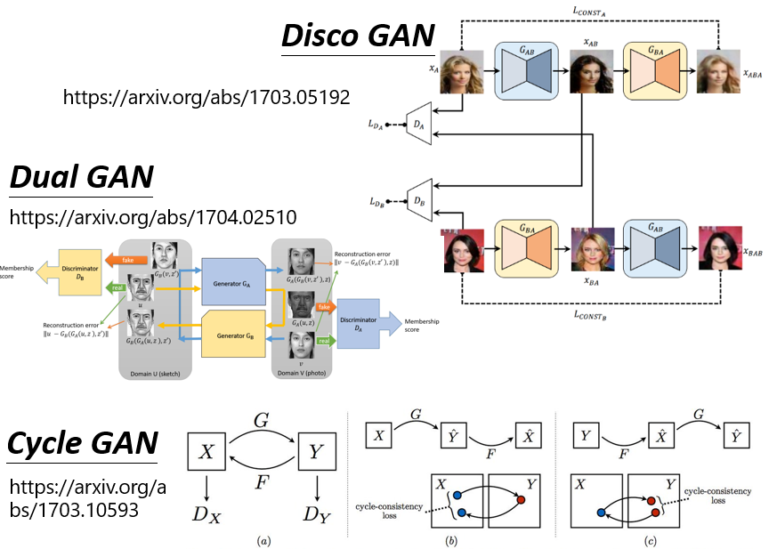
比如说Disco GAN 比如说Dual GAN，他们跟Cycle GAN有什么不同呢，就是没有半毛钱的不同这样子
你可以发现Disco GAN，Dual GAN跟Cycle GAN，其实是一样的东西，他们是一样的想法，神奇的事情是完全不同的团队，在几乎一样的时间，提出了几乎一模一样的想法，你发现这三篇文章，放到arxiv上的时间，都是17年的3月，17年的4月跟17年的3月
除了Cycle GAN以外，还有另外一个更进阶的，可以做影像风格转换的版本，叫做StarGAN
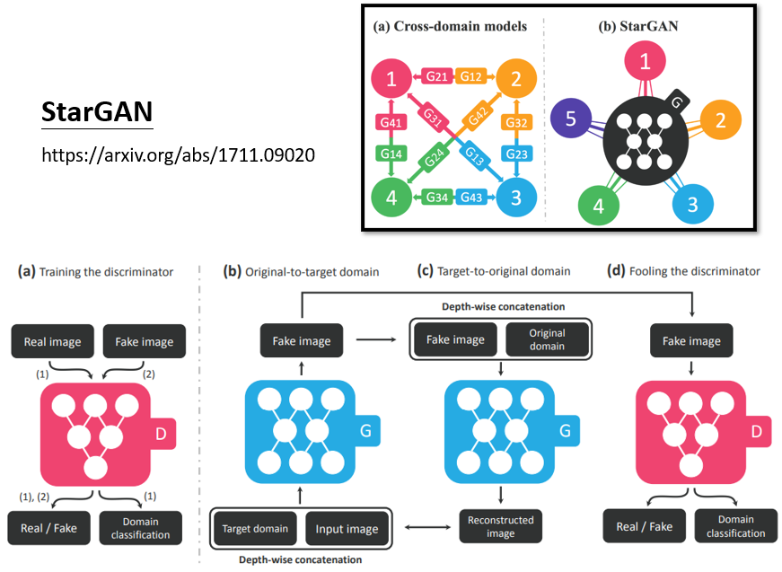
Cycle GAN只能在两种风格间做转换，那StarGAN 它厉害的地方是，它可以在多种风格间做转换，不过这个就不是我们接下来，想要细讲的重点
这个真实的人脸转二次元的任务，实际上能不能做呢，实际上可以做了
右上角这边放了一个链接，这个应该是一个韩国团队，他们做了一个网站，你可以上传一张图片，它可以帮你变成二次元的人物，他们实际上用的不是Cycle GAN啦，他们用的也是GAN的技术，但是是一个进阶版的东西，那我们这边就不细讲，我就把论文的链接，放在这边给大家参考
我就实际测试了一下，这个不知道大家认不认得，这是新垣结衣，这个是你老婆这样，你总该认得吧，把这个图片转成，把你老婆转成二次元的人物，长成是这个样子，你老婆二次元长这个样子知道吗
你会发现说机器确实，有学到一些二次元人物的特征，比如说 把眼睛变大，本来眼睛其实没有很大，变成二次元人物之后，眼睛变这么大，但有时候也是会失败

比如说 这个是美国前总统，转完以后变成这个样子，两双眼睛一眼大一眼小就是了，它不是总是会成功的
Text Style Transfer¶
那同样的技术不是只能用在影像上，也可以用在文字上，你也可以做文字风格的转换
比如说，把一句负面的句子转成正面的句子，当然如果你要做一个模型，输入一个句子输出的句子，这个模型就是要能够，吃一个sequence 输出一个sequence，所以它等于是一个sequence to sequence的model
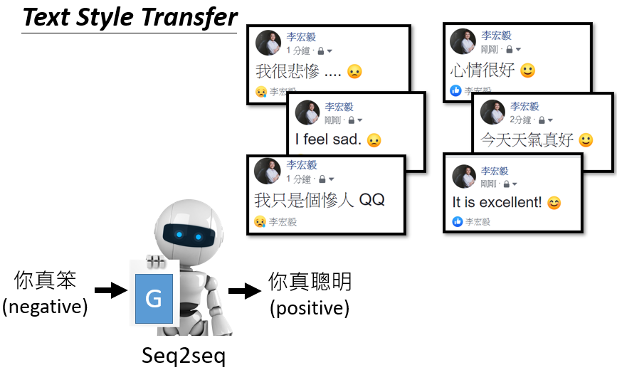
你可能就会用到，我们在作业五里面的，Transformer的架构，来做这个文字风格转换的问题，我们在作业五做的是翻译嘛，输入一个语言输出另外一个语言嘛
现在如果要做文字风格转换，就是输入一个句子，输出另外一个风格的句子
怎么做文字的风格转换呢，跟Cycle GAN是一模一样的，首先你要有训练资料，收集一大堆负面的句子，收集一大堆正面的句子
这个其实没有那么难收集，你可以就是网络上爬一爬，像我们就是去PTT上爬，然后只要是推文就当作是正面的，嘘文就当作是负面的，就有一大堆正面的句子，跟负面的句子，只是成对的资料没有而已，你不知道这句推文，要怎么转成这句嘘文，这些嘘文要怎么转成这句推文，你没有这种资料，但是一堆推文一堆嘘文的资料，你总是可以找得到的
那接下来呢，完全套用Cycle GAN的方法，完全没有任何不同
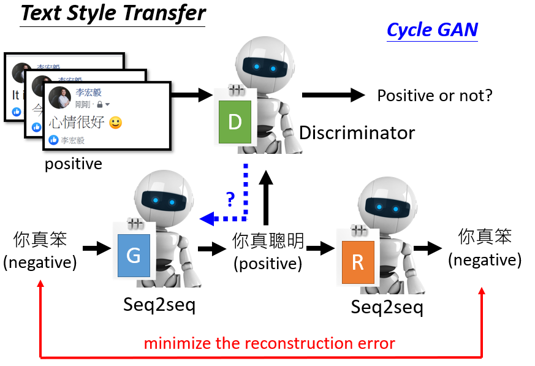
这边就不需要再细讲 很快讲过
有一个discriminator，discriminator要看说，假设我们是要负面的句子，转正面的句子，discriminator要看说，现在generator的输出，像不像是真正的正面的句子
然后我们还要有另外一个generator，要有两个generator，这个generator要学会，把正面的句子转回原来负面的句子，你要用Cycle consistency，负面的句子转成正面的以后，还可以转回原来负面的句子
你可能会问说，这两个句子 它们两个是句子啊，怎么算它们的相似度啊？
图片还比较好理解，图片就是个向量啊，两个向量的距离就是它们的相似度，那两个句子要怎么做呢，这个如果你有兴趣，在留给你慢慢研究，那这边还有另外一个问题就是，这个sequence to sequence model，输出是文字，可是刚才不是有讲说，如果输出是文字，接到discriminator会有问题吗，对 会有问题 这边你就要用RL硬做
那做出来的结果怎么样呢，这个是真正的demo，就是真的拿PTT的推文，当正面的句子，嘘文当负面的句子，那你就可以给它一个负面的句子，它就帮你转成正面的句子，做起来像是这个样子
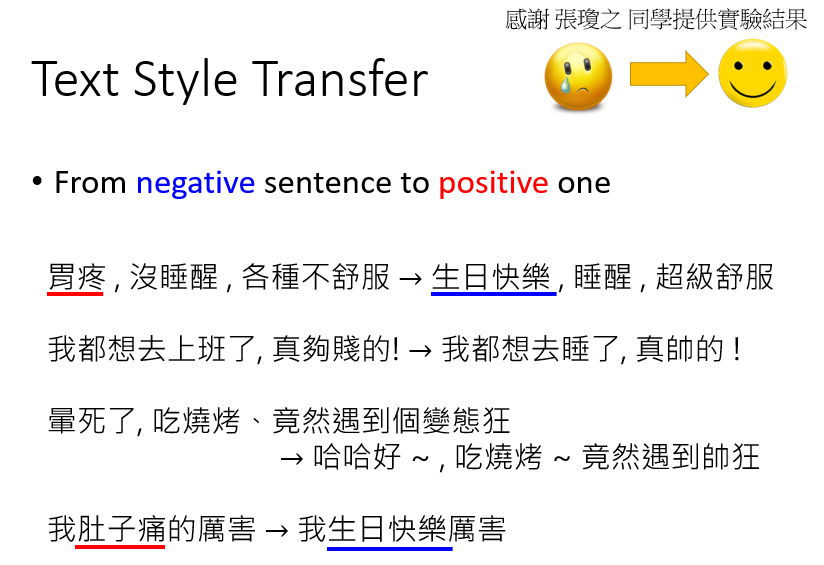
，你可能问说这个系统有什么用，就是没有任何用处 没半点用处，但是如果你觉得，你的老板说话特别坏的话，就可以把这个系统，装在你的耳机里面，把所有的负面的句子，转成正面的句子，你的人生可能就会，过得特别快乐一点
那其实像这一种文字风格转换，还有很多其他的应用，不是只有正面句子转负面句子
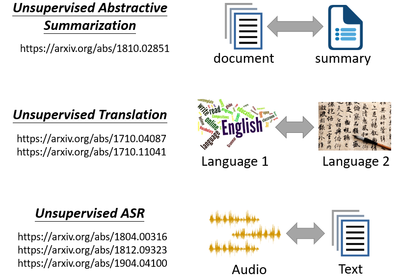
举例来说 假设我有很多长的文章，我有另外一堆摘要，这些摘要不是这些长的文章的摘要，是不同的来源，一堆长的文章 一堆摘要，让机器学习文字风格的转换，你可以让机器学会把长的文章，变成简短的摘要，让它学会怎么精简的写作，让它学会把长的文章变成短的句子
甚至还有更狂的，同样的想法可以做，unsupervised的翻译，什么叫做unsupervised的翻译呢，收集一堆英文的句子，收集一堆中文的句子，没有任何成对的资料，这就跟你作业五不一样，作业五你有成对的资料嘛，你有知道说这句英文对到这句中文，但是unsupervised翻译就是，完全不用任何成对的资料，网络上爬一堆中文，网络上爬一堆英文，用刚才那个Cycle GAN的做法硬做，机器就可以学会把中文翻成英文了，你可以自己看一下文献，看看说机器做得怎么样
到目前为止，我们说的两种风格都还是文字，可不可以两种风格，甚至是不同类型的资料呢，有可能做，这是我们实验室是最早做的，我们试图去做非督导式的语音辨识，，语音辨识就是，你需要收集成对的资料啊，你需要收集一大堆的声音讯号，然后找工读生，帮你把这些声音讯号标注，机器才能够学会，某个语言的语音辨识，但是要标注资料所费不貲，所以我们想要挑战，非督导式的语音辨识，也就是机器只听了一堆声音，这些声音没有对应的文字，机器上网爬一堆文字，这些文字没有对应的声音，然后用Cycle GAN硬做，看看机器有没有办法，把声音转成文字，看看它的正确率，可以做到什么样的地步，至于正确率可以做到，什么样的地步呢，那我把文献留在这边给大家参考，那以上就是有关GAN的部分
Concluding Remarks¶
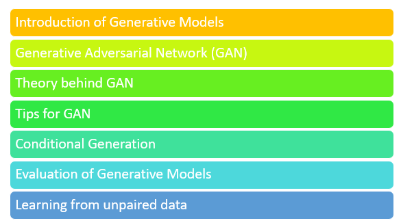